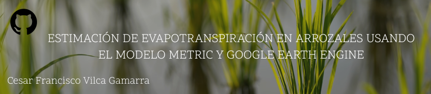

Aplicación del Modelo METRIC en cultivos de arroz#
Descripción#
El presente repositorio alberga el código usado para estimar evapotranspiración en cultivos de arroz en el distrito de Ferreñafe, usando el modelo METRIC (Allen et al., 2007), el cual se basa en el modelo SEBAL (Bastiaanssen et al., 1998), cuya formulación posee como fundamento la ecuación de balance energía superficial.
Figura 1 Ubicación de la región Lambayeque en la costa norte del Perú (a), ubicación de la zona de estudio en la provincia y distrito Ferreñafe, región Lambayeque (b), y su delimitación en el Fundo Zapote Figueroa (c). Ciclo de cultivo enero-junio 2022.#
Figura 2 Resultados obtenidos del modelo METRIC para las fechas evaluadas.#
Código#
En GitHub:
Carpeta
notebooks
Jupyter Notebook Viewer:
Referencias#
Artículos
Allen, R. G., Tasumi, M., & Trezza, R. (2007). Satellite-based energy balance for mapping evapotranspiration with internalized calibration (METRIC)—Model. Journal of irrigation and drainage engineering, 133(4), 380-394. http://dx.doi.org/10.1061/(ASCE)0733-9437(2007)133:4(380)
Bhattarai, N., Quackenbush, L. J., Im, J., & Shaw, S. B. (2017). A new optimized algorithm for automating endmember pixel selection in the SEBAL and METRIC models. Remote Sensing of Environment, 196, 178-192. https://doi.org/10.1016/j.rse.2017.05.009
Van der Tol, C., & Parodi, G. N. (2012). Guidelines for remote sensing of evapotranspiration. Evapotranspiration — Remote sensing and modeling, 227, 250. https://doi.org/10.5772/18582
Curso
Archibald, J., Gutierrez, H., Xu, S. (2020) Evapotranspiration. HydroLearn. https://edx.hydrolearn.org/courses/course-v1:HumboldtState+ENGR440+2020_Fall/about
Libros
Allen, R. G., Pereira, L. S., Raes, D., & Smith, M. (1998). Crop evapotranspiration-Guidelines for computing crop water requirements-FAO Irrigation and drainage paper 56. Fao, Rome, 300(9), D05109.
Dingman, S. L. (2015). Physical hydrology. Waveland press.
Información sobre el intercambio de agua y energía en superficie-atmósfera
Contacto#
En estas redes sociales comparto una variedad de contenidos sobre Agricultura de Precisión, programación con Earth Engine y más.
· Website vilcagamarracf.github.io · LinkedIn @cesarvilca · Twitter @vilcagamarracf